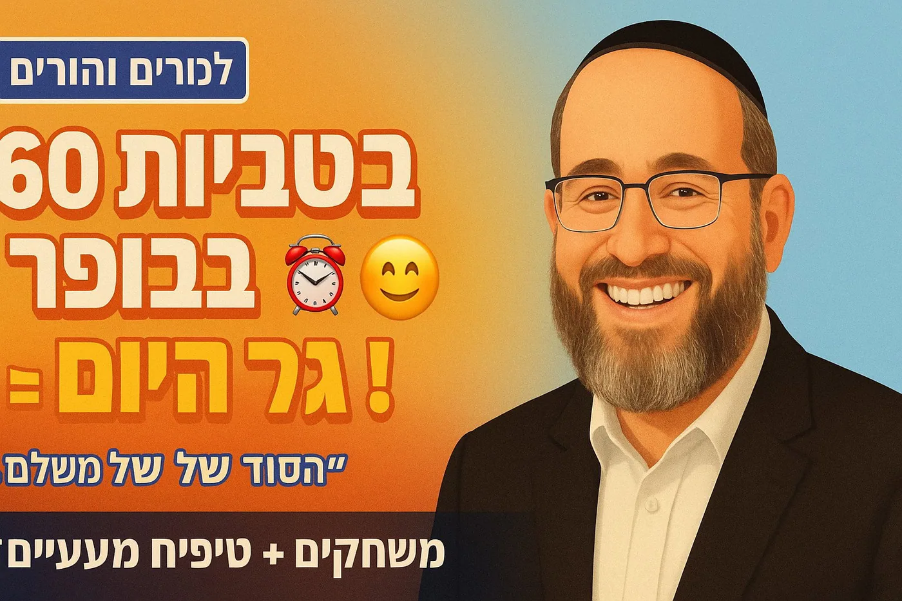

🎯
ערוץ:הרב יהודה טאוב: לומדים לראות גאולה – כהכרת הטוב
1️⃣ ניתוח הסרטון הנוכחי
נושא מרכזי: הכוח של התחלה חיובית ליום - שגרות בוקר שמשנות הכלמסרים עיקריים:
- איך מתחילים את היום קובע את הטון לכל היום
- שגרות פתיחה חיוביות בחינוך - כלי מעשי למורים והורים
- המדע: חיוך מפחית קורטיזול ומשחרר אנדורפינים
- "סבר פנים יפות" - המושג היהודי העתיק
- "המלבין שיניים לחברו יותר ממשקהו חלב" - חיזוק נפשי חשוב יותר מפיזי
- משחקים מעשיים: העבר את החיוך, לחיצת יד, מלחמת כדורי שלג בשמות
- סיפור מרגש: ניצול שואה - "יש לי לב ואת הלב שלי אני נותן לך"
- 3 צמתים רגשיים קריטיים: לפני שינה, בבוקר, כשחוזרים הביתה
חוזקות התוכן:✅ מאוד מעשי - מלא כלים קונקרטיים למורים והורים ✅ שילוב מדע ותורה בצורה מושלמת ✅ רלוונטי לקהל רחב - הורים, מחנכים, מורים ✅ סיפור רגשי עוצמתי (ניצול שואה) ✅ משחקים וטכניקות שניתן ליישם מידקהל יעד מורחב:👪 הורים 👨🏫 מורים ומחנכים 🏫 מנהלי מוסדות חינוך 💼 מנהלים בארגונים 🎯 כל מי שרוצה להתחיל את היום טוב יותרפוטנציאל SEO עצום:הסרטון עונה על חיפושים פופולריים כמו: "איך להתחיל את היום", "שגרת בוקר חיובית", "חינוך חיובי", "משחקים לפתיחת יום בכיתה", "סבר פנים יפות", "טיפים למורים"
2️⃣ כותרות מוצעות
✨ כותרת ראשית (66 תווים):
"איך 60 שניות בבוקר קובעות את כל היום - טיפים מעשיים"למה הכותרת הזו עובדת:
- ✅ מספר קונקרטי ומפתיע (60 שניות)
- ✅ הבטחה ברורה ("קובעות את כל היום")
- ✅ "טיפים מעשיים" - ערך מיידי שניתן ליישם
- ✅ פונה לצורך אוניברסלי - כולם רוצים יום טוב יותר
- ✅ יוצרת אפקט "זה כל כך קל?!"
- ✅ תוכן נצחי ללא שנה
⭐ כותרת חלופית (69 תווים):
"סוד ההצלחה של מורים מצטיינים - איך לפתוח את היום נכון"למה היא עובדת:
- ✅ פונה ישירות לקהל יעד (מורים)
- ✅ "סוד ההצלחה" - יוצר סקרנות
- ✅ "נכון" מעביר שיש דרך נכונה ודרך לא נכונה
- ✅ רלוונטי גם להורים ("איך לפתוח את היום")
- ✅ מבטיח ידע מקצועי של "מצטיינים"
🎓 כותרת אלטרנטיבית שלישית (68 תווים):
"למה הדקות הראשונות בבוקר חשובות יותר מכל השיעור?"למה היא עובדת:
- ✅ שאלה מעוררת מחשבה
- ✅ השוואה מפתיעה ומעוררת עניין
- ✅ פונה למחנכים בצורה ישירה
- ✅ יוצרת דיסוננס קוגניטיבי
3️⃣ תיאור מלא מותאם SEO
איך מתחיל היום שלכם? בלחץ ובריצה או בחיוך ושקט? גלו את הכוח המדהים של התחלה חיובית ליום - כלי פשוט שיכול לשנות את כל חווית הבוקר שלכם ושל הילדים. הרב יהודה טאוב מביא שילוב מושלם של מדע מודרני, חכמת התורה וכלים מעשיים להורים ומורים שרוצים ליצור שינוי אמיתי.
📚 בסרטון הזה תלמדו:
• למה התחלה חיובית של הבוקר משפיעה על כל היום - מדעית ורוחנית
• איך חיוך מפחית קורטיזול (הורמון הלחץ) ומשחרר אנדורפינים טבעיים
• "סבר פנים יפות" - המושג היהודי העמוק שמשנה מפגשים
• "המלבין שיניים לחברו יותר ממשקהו חלב" - חיזוק נפשי vs פיזי
• 5+ משחקים מעשיים לפתיחת יום בכיתה או בבית (ניתן ליישום מיידי!)
• 3 צמתים רגשיים קריטיים ביום שחייבים לנצל
🎯 מה תקבלו מהצפייה:
כלים קונקרטיים וניתנים ליישום מיידי ליצירת שגרת בוקר חיובית. בין אם אתם הורים, מורים או מחנכים - תקבלו טכניקות מוכחות שלוקחות פחות מדקה אבל משנות את כל האווירה. הבנה עמוקה של הקשר בין התחלה חיובית לבין למידה, התפתחות רגשית ויצירת קהילה חמה.
💡 יישומים מעשיים:
1. משחק "העבר את החיוך" - פעילות של 30 שניות שיוצרת אווירה מדהימה
2. לחיצות יד אישיות - קשר עין ושם - יוצר תחושת שייכות מיידית
3. "מלחמת כדורי שלג" בשמות - פעילות כיפית שגורמת לכולם להתחבר
4. מדליות סמליות - הכרה בחברות ועזרה, לא רק הישגים לימוdiים
5. ברכות בינלאומיות - "בואן ז'ורנו", "אלוהא" - משבר שגרה ויוצר חיוך
⏱️ חותמות זמן (Timestamps):
00:00 - פתיחה: איך מתחיל היום שלכם? בלחץ או בשקט?
00:18 - התמונה המוכרת: המירוץ המטורף בבוקר
00:36 - האם זה חייב להיראות ככה?
00:45 - הרעיון המהפכני: פתיחה רגועה ככלי חינוכי
01:07 - התחלה חיובית = קרקע טובה ללמידה
01:21 - שגרות פתיחה חיוביות - הכלי המעשי
01:36 - לא דורש מאמצים אדירים - פעולות קטנות ומכוונות
01:48 - למה חיוך כל כך אפקטיבי?
02:00 - המדע: לחץ vs חיוך - קורטיזול vs אנדורפינים
02:14 - חיוך כתרופה נגד לחץ
02:28 - המדע מאשר חכמה עתיקה
02:34 - "סבר פנים יפות" - המושג היהודי
02:46 - "המלבין שיניים לחברו יותר ממשקהו חלב"
03:03 - כלים פרקטיים ליישום
03:08 - משחקים מהירים לפתיחת יום
03:13 - דוגמה 1: "העבר את החיוך"
03:20 - דוגמה 2: לחיצת יד שיוצרת קשר אישי
03:29 - הכרה סמלית - מדליה לא על הישגים אלא על חברות
03:47 - עוד רעיונות יצירתיים: מלחמת כדורי שלג בשמות
03:57 - ברכות בינלאומיות - לגוון ולהפתיע
04:04 - סיפור מצמרר: ניצול שואה שחיפש אוכל בפח
04:17 - "אין לי כלום, אבל יש לי לב ואת הלב שלי אני נותן לך"
04:48 - איך המילים והחיבוק הצילו חיים ממש
05:05 - המסקנה: אנחנו תמיד יכולים לתת את הלב שלנו
05:16 - חיוך, מבט חם, מילה טובה - לא דברים של מה בכך
05:39 - 3 צמתים רגשיים קריטיים: לפני שינה, בבוקר, כשחוזרים
06:02 - קשר זה יותר מביצוע - הערכה לאדם עצמו, ללב שלו
06:15 - סיכום: הכלי הכי עוצמתי כבר נמצא בתוכנו
📖 מקורות נוספים:
• תלמוד בבלי, מסכת כתובות - "המלבין שיניים לחברו"
• ספרות חינוכית על למידה חברתית-רגשית (SEL)
• מחקרים על השפעת קורטיזול ואנדורפינים על למידה
• "סבר פנים יפות" - מקורות יהודיים על קבלת פנים
💼 מיועד במיוחד עבור:
👪 הורים שרוצים בוקר רגוע יותר
👨🏫 מורים ומחנכים בכל הגילאים
🏫 מנהלי מוסדות חינוך
💼 מנהלים שרוצים לשפר אווירה בצוות
🎯 כל מי שרוצה להתחיל את היום נכון
🤝 הצטרפו לקהילה שלנו:
📺 ערוץ יוטיוב: https://www.youtube.com/channel/UCtW9paDQ9Gq6aVmAfuu8Onw
💬 למדו איתנו לראות את הגאולה בפרטים הקטנים של היום יום
🔔 הירשמו והפעילו התראות לתכנים חדשים מדי יום
#חינוך #תורה #יהדות #הורות #מורים #שגרתבוקר #חיוביות #כיתה #התחלהחיובית #רביהודהטאוב #טיפיםלמורים #חכמתהתורה #סברפניםיפות #חסד #חיוך #גאולה #השראה #למידה #SEL #חינוךחיובי6️⃣ 📚 סיכום מקיף ומעשי - "60 שניות שישנו את היום שלכם"
⏰ איך מתחיל היום שלכם?
בואו נהיה כנים רגע 🤔רוב הבקרים שלנו נראים ככה:השעון מצלצל 🔔בום - המירוץ מתחיל 🏃♂️💨לחץ, ריצה, צעקות...
"מהר! נאחר!""איפה הנעליים?!""למה לא אכלת?!"
וככה, עוד לפני שהיום באמת התחיל 🌅האווירה כבר מתוחה לגמרי 😰הטון נקבע.המתח מלווה אותנו מהשנייה הראשונה.
🤷 אבל האם זה חייב להיראות ככה?
זו השאלה הנכונה! 💡התשובה: לא! ❌ויש לזה גם גיבוי מדעי וגם גיבוי מהתורה 📖🔬
🎯 הרעיון המהפכני הזה ישנה לכם הכל
מסתבר שפתיחה רגועה וחיובית של הבוקר 🌤️היא לא סתם משהו נחמד שיהיה כיף שיהיה.זה כלי חינוכי מהמעלה הראשונה 🎓
זה ממש משנה את כל הדינמיקה:✨ התלמידים יותר פנויים✨ המורים יותר רגועים✨ כולם מוכנים ללמוד
וההשפעה?מיידית וישירה ⚡התחלה חיובית מכינה את הקרקע ללמידה 🌱היא פותחת את הראש 🧠פותחת את הלב ❤️ומשפיעה על הפנינות הרגשית והקוגניטיבית שלנולכל האתגרים של היום 🎯
🛠️ אז איך עושים את זה בתכלס?
הנה הדבר המדהים:זה לא דורש מאמצים אדירים 💪אנחנו מדברים על פעולות קטנות ומכוונות:
😊 חיוך🌞 ברכת "בוקר טוב" חמה🎮 משחק קצרצר
המחוות הקטנטנות האלה 🎁הן אלו שיכולות לחולל שינוי עמוק 💫באווירה של הכיתה או של הבית.
🧬 המדע מאחורי החיוך - זה פשוט וואו!
תראו מה קורה לנו בגוף:
😰 צד אחד: לחץ
הגוף מוצף בקורטיזול (הורמון לחץ) 📈זה מכניס אותנו למצב "לחימה או בריחה" 🥊🏃קשה לחשוב 🤯קשה להיות יצירתיים 🎨המוח במצב הישרדות 🚨
😊 צד שני: חיוך
חיוך זה כמו תרופה קסם 💊✨הוא לא רק מפחית את הקורטיזול ⬇️הוא גם משחרר אנדורפינים ⬆️
אנדורפינים = 🎉הכימיקלים שגורמים לנו:✅ להרגיש טוב✅ להרגיש רגועים✅ להיות מוכנים ללמוד
זה שינוי פיזיולוגי אמיתי 🧪וזה מה שמכין את המוח שלנו:📚 לקלוט מידע🎯 להתרכז💡 פשוט ללמוד!
📖 והחכמה העתיקה ידעה את זה כבר!
המדע המודרני מאשר חכמה יהודית עתיקה 🔄
יש מושג יפהפה שנקרא: "סבר פנים יפות" ✨זו לא סתם המלצה לנימוס 🙅זו הבנה עמוקה 💎
הדרך שבה אנחנו מקבלים את פני אחר 🤝עם פנים מאירות ☀️עם פנים נעימות 😊משפיעה על כל המפגש כולו! 🎭
💬 הציטוט התלמודי שמסכם הכל
"המלבין שיניים לחברו יותר ממשקהו חלב" 🥛😊
מה זה אומר?האנזה הנפשית 💆החיזוק 💪העידוד לרוח ✨שחיוך מעניק לאדם –
הם גדולים וחשובים יותר 🏆מהזנה פיזית כמו חלב! 🥛
חלב מזין את הגוף 💪אבל חיוך מזין את הנשמה 🌟
🎮 בואו נהיה פרקטיים - משחקים שעובדים!
עכשיו מגיע החלק הכי כיף 🎉הנה משחקים שלוקחים פחות מדקה ⏱️אבל משנים את כל האווירה 🌈
🎭 משחק 1: "העבר את החיוך"
פשוט יושבים במעגל ⭕ומעבירים חיוך מאחד לשני 😊➡️😊➡️😊
זה מדבק! 🦠 (בצורה הכי טובה!)זה מהיר! ⚡וזה יוצר אווירה מיידית 🌟
🤝 משחק 2: לחיצת יד אישית
לא סתם לחיצת יד 🙅אלא עם:👁️ קשר עין📛 אמירת השם💚 חיוך אמיתי
זה יוצר קשר אישי ומיידי ⚡תחושת "אני רואה אותך" 👀תחושת שייכות 🏠
❄️ משחק 3: "מלחמת כדורי שלג" בשמות
זה גאוני! 💡כותבים שמות על פתקים 📝מקמטים אותם (כמו כדורי שלג) ❄️זורקים 🎯
וכל אחד:📄 מוצא פתק😊 מאחל "בוקר טוב" לאדם ששמו שם
זה מצחיק 😂שובר את הקרח 🧊ומחבר את כולם 🤗
🏅 משחק 4: מדליות סמליות
הנה החידוש 💡מעניקים מדליה לא על הישג לימודי ❌📚אלא על:💚 חברות טובה🤝 עזרה למישהו❤️ חום אנושי
זה מחזק תחושת קהילה 👥זה אומר: "מה שחשוב זה מי שאתה, לא רק הציונים" ✨
🌍 משחק 5: ברכות בינלאומיות
במקום רק "בוקר טוב" 🇮🇱נסו:🇮🇹 "בואן ג'ורנו!"🇫🇷 "בון ז'ור!"🌺 "אלוהא!"
המטרה?🎨 לגוון😄 ליצור חיוך🌟 לשבור שגרה
💔 הסיפור שיגרום לכם לבכות - ויראה לכם למה זה כל כך חשוב
עכשיו אני רוצה לספר לכם סיפור אמיתי ומצמרר 😢שמראה עד כמה קשר אנושי חם יכול להציל חיים.
🕯️ ניצול שואה שחיפש אוכל בפח
הוא הגיע לארץ בלי כלום 🫙❌ לא משפחה❌ לא כסף❌ לא אוכל
יום אחד היה קשה במיוחד 😞"הייתי רעב מאוד" הוא אומר 🍞"ובלית ברירה החלטתי ללכת לחפש אוכל בפח הזבל" 🗑️💔
בזמן שהוא חיפש שם בהשפלה 😢ניגש אליו מישהו אחר...
תפס בידו 🤝ואמר לו:
"דע לך - אין לי כלוםגם לי אין כסףגם לי אין אוכלאבל משהו אחד יש לי:יש לי לבואת הלב שלי אני נותן לך" ❤️
שנים לאחר מכן ⏳אותו ניצול מגיע לנחם את משפחת האיש שהציל אותו 🕊️והוא מספר להם:
"כשאבא שלכם אמר לי שהוא נותן לי את הלב שלו -הוא הציל אותי 🆘הייתי על סף סיום חיי 💔המילים האלה, החיבוק הזה -הם פשוטו כמשמעו הצילו את חיי" 🙏✨
תחשבו על זה רגע 🤔המילים האלה 💬החיבוק הזה 🤗הם הצילו נשמה 🌟
💡 המסקנה שמשנה הכל
הסיפור הקיצוני הזה ממחיש את הנקודה שלנו:
אנחנו לא תמיד יכולים לתת:❌ כסף 💵❌ אוכל 🍞❌ מתנות 🎁
אבל את הלב שלנו? ❤️את הקשר האנושי? 🤝את החיוך? 😊
את זה אנחנו תמיד יכולים לתת! ✨
🎯 3 צמתים רגשיים שאסור לפספס
יש שלושה רגעים קריטיים ביום 🎯שבהם הילדים שלנו צריכים אותנו במיוחד:
🌙 1. לפני השינה
זה הרגע שבו מאבדים את היום 📅וחושבים על מחר 🔮הילדים מחפשים ביטחון 🛡️
מה לעשות:💤 חיבוק ארוך😊 מילה טובה על היום❤️ "אני אוהב אותך"
☀️ 2. בבוקר - לפני היציאה לעולם
זה הרגע שבו שולחים אותם החוצה 🚪לגן, לבית ספר, לעולם 🌍
מה הם צריכים:🛡️ תחושה של "יש לי גב חזק"💪 "אני לא לבד"☀️ "יש מי שמאמין בי"
איך נותנים את זה:😊 חיוך אמיתי👁️ קשר עין💬 "אני מאמין בך"🤗 חיבוק לפני היציאה
🏠 3. כשחוזרים הביתה
זה הרגע שבו הם חוזרים למרחב הבטוח 🏡עייפים 😴מלאים בחוויות 📚צריכים קבלה 🤗
מה לעשות:👋 לקום לקבל אותם😊 חיוך ענק❓ "ספר לי על היום"🤗 חיבוק חם
אלו רגעים קטנים ⏰אבל עם השפעה עצומה! 💥
🎭 קשר זה יותר מביצוע - זו הערכה לאדם עצמו
חשוב להדגיש משהו קריטי ⚠️
קשר אמיתי זה הרבה יותר מלהגיד "כל הכבוד" 👏זה לא רק:❌ "וואו, איזה ציון!"❌ "יפה עשית!"❌ "כל הכבוד על ההצלחה!"
קשר אמיתי זה הערכה עמוקה 💎לא למה שהילד עשה 🏆אלא למי שהילד הוא ✨
✅ ללב שלו ❤️✅ למאמץ שלו 💪✅ לכוונות שלו 🎯✅ לנשמה שלו 🌟
זה ההבדל בין:❌ הכרה שטחית✅ חיבור אמיתי
🌟 מחשבה לסיום - הכלי הכי עוצמתי בעולם
אז מה הכלי הכי עוצמתי שיש לנו? 🤔הכלי שיכול:✨ לחולל שינוי💊 לרפא🌍 ליצור עולם טוב יותר
זה לא משהו שצריך לקנות 💸זה לא משהו שצריך ללמוד 📚זה לא משהו שצריך להשיג 🏆
זה משהו שכבר נמצא בתוכנו 💝ושאנחנו יכולים להעניק אותו בחופשיות 🎁בנדיבות 💚בכל רגע ורגע ⏰
❤️ זה הלב שלנו
😊 החיוך שלנו🤗 החיבוק שלנו👁️ המבט החם שלנו💬 המילה הטובה שלנו
אלה הכלים הכי חזקים בעולם 💪✨
🎬 צפו בסרטון המלא כאן: [קישור לסרטון]📺 עוד כלים מעשיים בערוץ: https://www.youtube.com/channel/UCtW9paDQ9Gq6aVmAfuu8Onw
7️⃣ ציטוטים מעוררי השראה (מותאמים לשיתוף)
📱 מוכנים לשיתוף ברשתות חברתיות:
ציטוט 1:
"פתיחה רגועה וחיובית של הבוקר היא לא סתם משהו נחמד - זה כלי חינוכי מהמעלה הראשונה. התחלה חיובית פשוט מכינה את הקרקע ללמידה, פותחת את הראש ואת הלב."— הרב יהודה טאוב על חינוך חיובי
ציטוט 2:
"חיוך הוא כמו תרופה קסם - הוא לא רק מפחית קורטיזול (הורמון הלחץ), הוא גם משחרר אנדורפינים שגורמים לנו להרגיש טוב ומכינים את המוח ללמוד."— מדע מאחורי החיוך
ציטוט 3:
"'אין לי כלום - לא כסף, לא אוכל - אבל משהו אחד יש לי: יש לי לב, ואת הלב שלי אני נותן לך.' המילים והחיבוק האלה הצילו חיים ממש."— סיפור ניצול שואה שמלמד על כוח הקשר האנושי
ציטוט 4:
"יש שלושה צמתים רגשיים קריטיים ביום: לפני השינה, בבוקר לפני היציאה, וכשחוזרים הביתה. אלו רגעים קטנים אבל עם השפעה עצומה על הילדים שלנו."— הרב יהודה טאוב על הורות מודעת
ציטוט 5:
"קשר אמיתי זה הרבה יותר מ'כל הכבוד על הציון' - זו הערכה עמוקה לאדם עצמו, ללב שלו, למאמץ שלו, לכוונות שלו. זה ההבדל בין הכרה שטחית לחיבור אמיתי."— על חינוך משמעותי